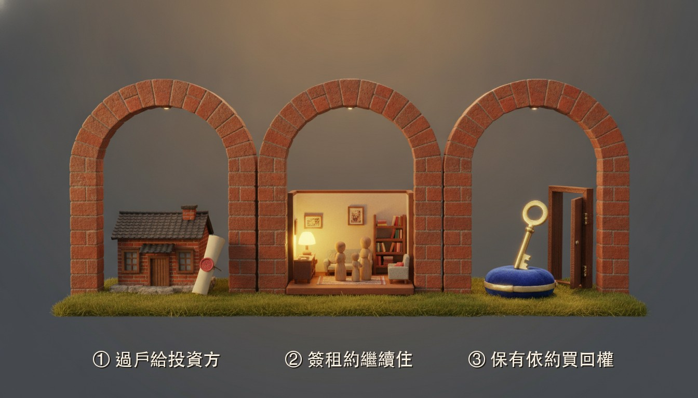

繼承的房子不想賣，還有什麼選擇？可以評估「售後回租」。房子過戶給投資方、同時簽租約繼續住，並可保有日後依約買回的權利；是否適合依個案不動產與財務狀況評估。金額常見為市值 7–9 成（依個案），流程一般約 2–4 週。若信用與收入正常，也可先評估銀行房貸或增貸（市值約 6–7 成，依個案審核為準）。本公司非金融機構，最終核貸由金融機構決定。
「房子要賣了嗎？」處理繼承的過程裡，這句話遲早會被問到。
先看一組數字。內政部統計，2025 年全台建物「繼承」登記 78,324 棟，占整體移轉的比重升到 17.4%——買賣在降溫，繼承卻年年增加。愈來愈多家庭正在接下一間房子，也接下同一道題：家裡需要一筆資金，但那間房子，不是說賣就能賣的。
那可能是爸媽住了幾十年的家：過年圍爐的那張桌子、住了幾十年的老鄰居、牆上還留著孩子小時候量身高的鉛筆線。「賣掉換現金」在試算表上成立，在飯桌上常常過不了關。
這篇文章講清楚一條很多繼承家庭沒聽過的路：售後回租——它怎麼運作、跟賣斷差在哪、適合誰、不適合誰。
「不想賣」和「需要錢」同時出現，通常來自三種場景：
最常見的是分配——多位繼承人之間，有人想留房、有人想拿錢，想留房的人就需要一筆資金把其他人的份處理好。也可能是事業週轉，或長輩留下的其他事務要收尾。
繼承來的常常不是一間普通的房子，而是全家的記憶所在。真的賣斷給外人、全家搬走，很多家庭過不了心裡這一關——不是算不清楚，是捨不得。
想留房又需要資金，第一直覺是拿房子去申請銀行貸款。信用與收入正常，這條路可行——一般依市值核貸約 6–7 成（依個案審核為準）。但繼承人自己的信用紀錄有瑕疵、收入證明不齊、或負債比過高時，銀行往往搖頭。被婉拒之後，很多家庭以為只剩「賣房」一條路。其實不是。
繼承的房子有一道前置功課：產權。一般規則講成人話——謄本上的所有權人要先變成你。繼承登記完成之前，銀行與投資方都不會受理。
多位子女共同繼承時，房屋常處於「公同共有」狀態，處分需要全體繼承人同意；就算已分割為「分別共有」，實務上只拿單獨持分去申辦，銀行與投資方幾乎不接受、很難處理。最可行的做法是先辦理遺產分割：繼承人協議優先，無法協議時才向法院請求裁判分割，取得清楚產權後再談資金方案。登記與分割協議等專業事項，協同地政士辦理。
售後回租（Sale and Leaseback）不是新發明，但很多繼承家庭沒聽過。它的運作方式，三個要件永遠是一組，缺一不可。

這是真實的所有權移轉，不是變相擔保。完成地政登記後，謄本上的所有權人會變成投資方，你則一次取得一筆資金——常見為市值 7–9 成（依個案）。這一點必須先講明白：聽到「房子其實還是你的」這種說法，反而要提高警覺。
過戶的同時簽訂租約，你以承租人身分住在原屋、按月繳付約定租金，居住權益受租賃契約保障。孩子上學的路線、爸媽熟悉的市場、過年圍爐的那張桌子——日常一如往常。
合約中約定：日後可依約定的條件與價格，把房子買回來。對繼承家庭來說，這一條的意義最重——祖厝不是就此斷了線，而是留了一條回家的路。買回的條件、期間、價格，都要白紙黑字寫進合約。
🔑 一句話版本：房子過戶給投資方、同時簽租約繼續住，並可保有日後依約買回的權利；是否適合依個案不動產與財務狀況評估。三個要件缺一不可——只講「繼續住」不講「過戶」、或只講「拿到資金」不講「買回」的說法，都不完整。
兩條路的起點一樣：都是把房子過戶出去、取得一筆資金。差別在後面——賣斷之後，家就交出去了；售後回租則是過戶給投資方後，同時以租約繼續住，並保有日後依約買回的權利。
| 項目 | 直接賣斷 | 售後回租 |
|---|---|---|
| 所有權 | 移轉給買方 | 移轉給投資方 |
| 拿到資金後 | 交屋、搬家 | 簽租約繼續住在原屋 |
| 日後想拿回房子 | 要重新向新屋主洽購，對方未必願意 | 合約中保有依約買回的權利 |
| 每月支出 | 無 | 約定租金 |
| 可動用金額 | 市場成交價 | 常見為市值 7–9 成（依個案） |
簡單說：賣斷換到最多的現金，代價是家；售後回租少拿一些，換到「繼續住」與「買回的路」。哪個划算，取決於你們家最在意什麼。
前面講過，售後回租＝過戶給投資方＋簽租約繼續住＋保有依約買回的權利。這樣的安排，適合：
再講不適合的——這三種情況，先不用來找我們：
通常要先把產權整理好。售後回租的第一步是把房子過戶給投資方，屬於處分行為；公同共有狀態下，處分需全體繼承人同意。實務上多半先完成遺產分割——繼承人協議優先，無法協議時才向法院請求裁判分割——取得清楚產權後，再進行過戶、簽租約續住並約定日後依約買回。
可以，資金用途由你決定。實務上常見的用途正是分配給其他繼承人、處理長輩留下的事務或事業週轉。金額常見為市值 7–9 成（依個案）；房子過戶給投資方、同時簽租約繼續住，並保有日後依約買回的權利，家不用交出去，該分配的也能處理。
居住上，你和家人以租約繼續住在原屋，生活動線與日常一如往常。不過售後回租包含真實的所有權移轉——房子過戶給投資方、完成地政登記，同時以租約續住並保有日後依約買回的權利；我們不會把「別人不會知道」說死，把話說死的說法，反而要提高警覺。
不一定。買回的價格、期間與條件由雙方在簽約時協議、白紙黑字寫進合約，各案不同。售後回租是「過戶給投資方＋簽租約繼續住＋保有日後依約買回的權利」一組安排，其中買回條款是把祖厝留在家族裡的關鍵；簽約前務必確認具體內容，並衡量自身日後的買回能力，是否適合依個案不動產與財務狀況評估。
LINE 加 → https://lin.ee/PHIfSoY
電話 → 02-2249-0517 / 0931-087-996
新北市中和區中正路 468 號
不申請不收費，面談不收費。
本文為一般資訊分享，非要約或個案承諾。售後回租與貸款方案條件均依個案不動產條件、財務狀況與市場情況而定；本公司非金融機構，提供諮詢與媒合協助、非資金提供方，貸款類方案之最終核貸由金融機構決定。簽約前請詳閱契約條款，並衡量自身租金負擔與買回能力；如評估貸款方案，請一併衡量還款能力。